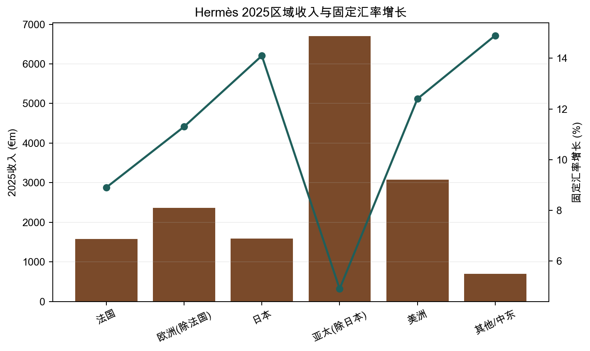
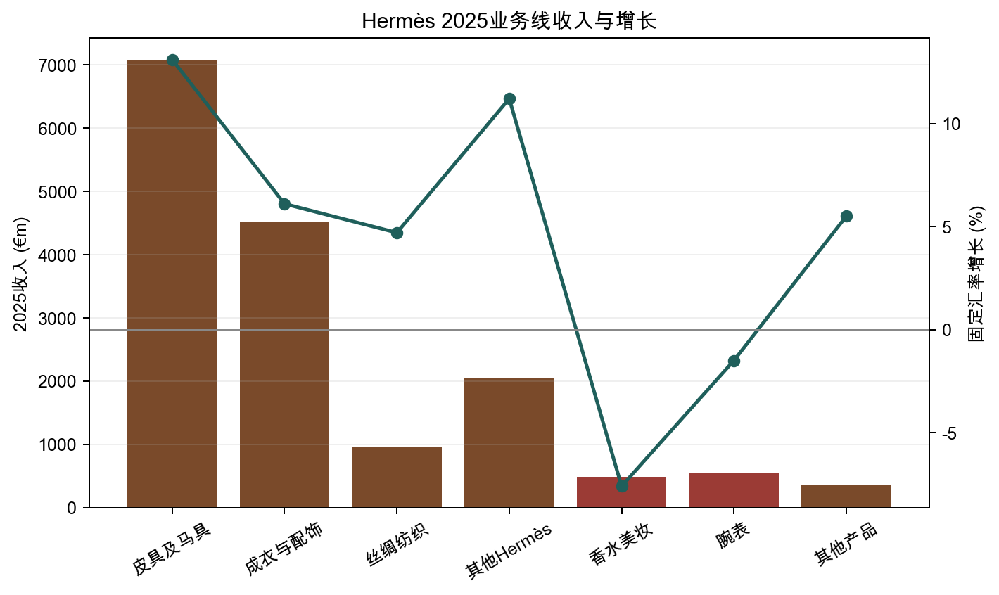
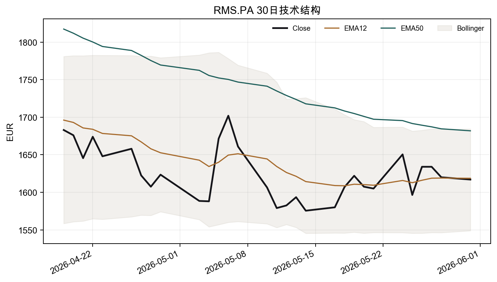
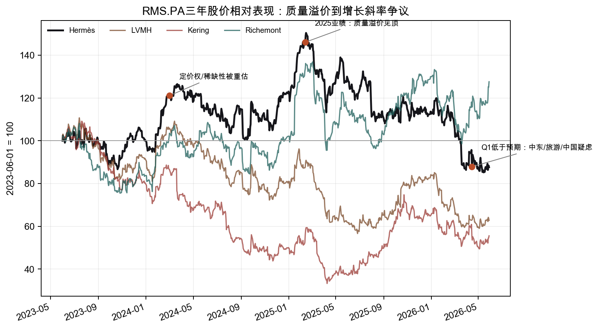
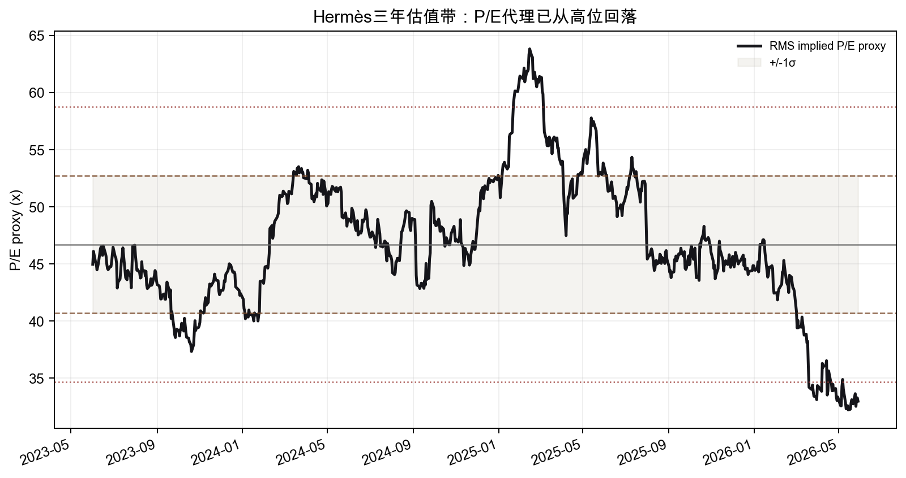
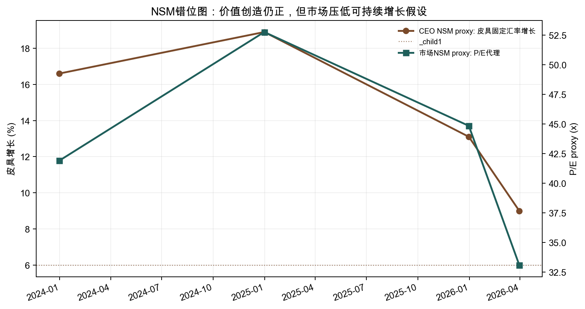

Ticker: RMS.PA / HESAY
Date: 2026-06-01
Classification: Quality compounder / Watchlist
结论：爱马仕是顶级质量资产，但本次不建议直接进入下一阶段深度研究。当前争议不是“市场完全看错了公司”，而是市场把估值锚从“稀缺品类永久高增长”切回“2026-2029年约7%销售 CAGR、约11% EPS CAGR的高质量奢侈品公司”。这个锚可能偏短视，但还不足以构成明确结构性误价。
多源证据显示，核心飞轮仍在：2025年收入€16.0bn、固定汇率增长8.9%、经常性经营利润率41.0%、净现金€12.8bn；2026Q1虽然固定汇率增长降至5.6%，但皮具仍增长9%，管理层维持皮具6-7%销量增长和5-6%价格提升目标。真正的问题是，二级市场溢价、游客消费、中东冲击、中国客群和Chanel/Dior创意更新正在让投资者质疑终值增长假设。
| Source Category | Latest Source Date | Freshness Status | Age vs. Report Date |
|---|---|---|---|
| Sell-side reports | 2026-05-25 / 2026-05-31更新的Bernstein二手价格追踪；UBS 2026Q1电话会反馈 | Current | 约1周 |
| Earnings call transcript | 2026-04-15 Q1 revenue call | Current | 约7周 |
| SEC filings | EdgarTools无法定位HESAY/RMS；使用2025 URD和官方Q1公告替代 | ADR/外国发行人覆盖缺口 | 官方URD约2个月 |
| Buy-side / long-form | 2025-12-15 Acquired讨论；Podwise跨播客检索 | Useful but indirect | 约5.5个月 |
| Market / technical | 2026-05-31 yfinance/OpenBB | Current | 1天 |
| Item | Latest Situation |
|---|---|
| Market Data & Positioning | RMS.PA约€1,617，市值约€169bn；52周区间约€1,529-€2,482；净现金充足，企业价值低于市值约€12bn。yfinance共识目标价约€2,063，22位分析师，评级均值偏买入。 |
| Key Financial Metrics | 2025收入€16.0bn，同比增长5.5%/固定汇率8.9%；经常性经营利润€6.57bn，利润率41.0%；调整后自由现金流€3.88bn；2026Q1收入€4.07bn，固定汇率+5.6%、实际汇率-1.4%。 |
| Price Action & Technicals | 股价低于50日均线€1,649和200日均线€1,982，技术趋势仍偏空；30日RSI约47.5，MACD柱为正但仍在负区间修复，属于反弹而非趋势确认。 |
| Positioning | 卖方分歧扩大：Bernstein仍Outperform但降目标价，UBS/Barclays转谨慎，JPM/Morgan Stanley偏中性。自由流通股有限，机构拥挤长仓回撤会放大波动。 |
| Key Metric | Value | Implication |
|---|---|---|
| 2025经常性经营利润率 | 41.0% | 同业极高水平，说明直营网络、稀缺供给和固定成本杠杆仍强。 |
| 2026Q1皮具增长 | +9% cFX | CEO NSM代理仍健康，但低于市场对“无瑕疵增长”的要求。 |
| 2026E Forward P/E | 约31-40x | 取决于数据源和EPS口径，仍是奢侈品板块最高溢价之一。 |
| 净现金 | €12.8bn | 抗周期能力强，但估值主要不靠资产负债表，而靠终值增长信念。 |



市场主锚是Forward P/E / 相对P/E，辅以DCF交叉验证。Bernstein 2月用3.5x MSCI Europe相对P/E给€2,650，3月下调至3.2x、目标价€2,250，认为估值已部分反映“Ferrari式重置”。UBS更谨慎，目标价€1,820，核心担忧是皮具规模扩张可能削弱独特性和终值增长。JPM用DCF，假设中期增长6.5%、终值增长4.5%、WACC 7%，目标价€2,350但维持Neutral。
当前价格约隐含市场要求：Hermès不能只是“比行业好”，还要证明皮具供给扩张不会破坏稀缺性、非皮具不会继续失速、中国和旅游客群不会转为结构性拖累。若这些担忧只是短期噪音，股价有恢复到中位目标价的空间；若终值增长从高个位数下修到中个位数，当前估值仍可能不便宜。
| Company | Market Cap | Forward P/E | Trailing P/E | Revenue Growth | Margin |
|---|---|---|---|---|---|
| Hermès (RMS.PA) | €169bn | 31.3x | 37.5x | 3.9% | 28.3%净利率 |
| LVMH (MC.PA) | €234bn | 18.5x | 21.7x | -4.7% | 13.5%净利率 |
| Kering (KER.PA) | €31bn | 25.5x | n.a. | n.a. | 0.5%净利率 |
| Richemont (CFR.SW) | CHF99bn | 23.1x | 31.3x | 4.2% | 15.5%净利率 |
Hermès的溢价合理性来自“单品牌顶层客群 + 稀缺供给 + 高现金转化 + 家族控制”。但从组合角度，LVMH/Kering是自救与复苏弹性，Richemont是珠宝定价权，Hermès则是质量溢价。如果板块资金偏好转向“低估值复苏”，Hermès短期相对表现会继续承压。



| Lens | Assessment |
|---|---|
| CEO NSM | 稀缺且高质量的手工产品交付能力，最接近的公开代理是皮具产能/销量增长与皮具固定汇率收入增长。 |
| Long-term investor NSM | 稀缺性不被稀释前提下的长期现金利润增长：二级市场溢价、直营网络销售密度、经营利润率和FCF共同验证。 |
| Market-consensus NSM | Forward P/E是否还能维持极高相对倍数，短期被Q1有机增长、Asia ex-Japan/旅游客群、皮具增长斜率驱动。 |
| Mismatch category | 叙事陷阱与健康滞后的混合。市场可能过度惩罚短期旅游/中东扰动，但对皮具供给扩张和中国客群疲劳的担忧并非无效。 |
极少数客户把Hermès视为不可替代的身份与品味资产 → 为等待/配货/关系投入时间和购买其他品类 → 门店成为高信任、低折扣的分配系统 → 稀缺性推动二级市场溢价和品牌声望 → 价格权、直营销售密度、40%+经营利润率和自由现金流
上行路径清楚但不是“胖尾”：若2026H2皮具恢复到低双位数、二级市场溢价稳定在1.5-1.8x、中国继续小幅正增长，股价可向€2,100-2,250区间修复。下行风险在于终值倍数压缩：如果皮具供给增加被市场解读为稀缺性稀释，而非皮具和旅游消费继续弱，30x以上P/E仍有压缩空间。
Classification: Quality compounder / Watchlist.
按项目的推进标准，本次不满足“直接进入下一阶段”的三项条件。第一，Wrong anchor：市场用P/E和有机增长斜率定价，并不明显错误；真正争议是终值增长应该给3.2x还是更高相对倍数。第二，Material upside：从€1,617到共识/卖方中位目标价有可观修复，但这更像质量资产回撤后的再评级，而非低估到足以改变组合权重的结构性误价。第三，Validation path：未来几个季度确实可验证，但证据目前双向：二手价企稳支持多头，Asia ex-Japan与旅游暴露支持谨慎派。
更合适的处理是放入优质复利股观察名单，等待2026H1/H2数据确认“皮具增长重加速 + 二级市场溢价稳定 + 中国无结构性恶化”。若三者同时出现，才值得进入估值敏感性和仓位级别研究。